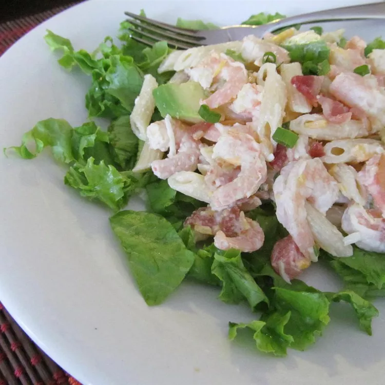

Shrimp Avocado Pasta Salad

Description
Nice on a summer's afternoon. Great as a side dish, but also as a refreshing lunch or supper.
Ingredients
- 1 (16 ounce) package uncooked penne pasta
- ¼ pound bacon
- 1 pound cooked shrimp, peeled and deveined
- 2 avocados - peeled, pitted and diced
- 1 cup shredded Cheddar cheese
- 1 cup mayonnaise
- ¼ cup lemon juice
- 2 tomatoes, diced
- 1 teaspoon crushed red pepper
- 4 cups shredded lettuce
Steps
- Bring a large pot of lightly salted water to a boil. Place pasta in the pot, cook for 8 to 10 minutes, until al dente, and drain. Rinse under cold running water to cool.
- Place bacon in a skillet over medium high heat, and cook until evenly brown. Drain and crumble.
- In a large bowl, gently toss together the pasta, bacon, shrimp, avocados, Cheddar cheese, mayonnaise, lemon juice, tomatoes, and red pepper. Serve over lettuce.